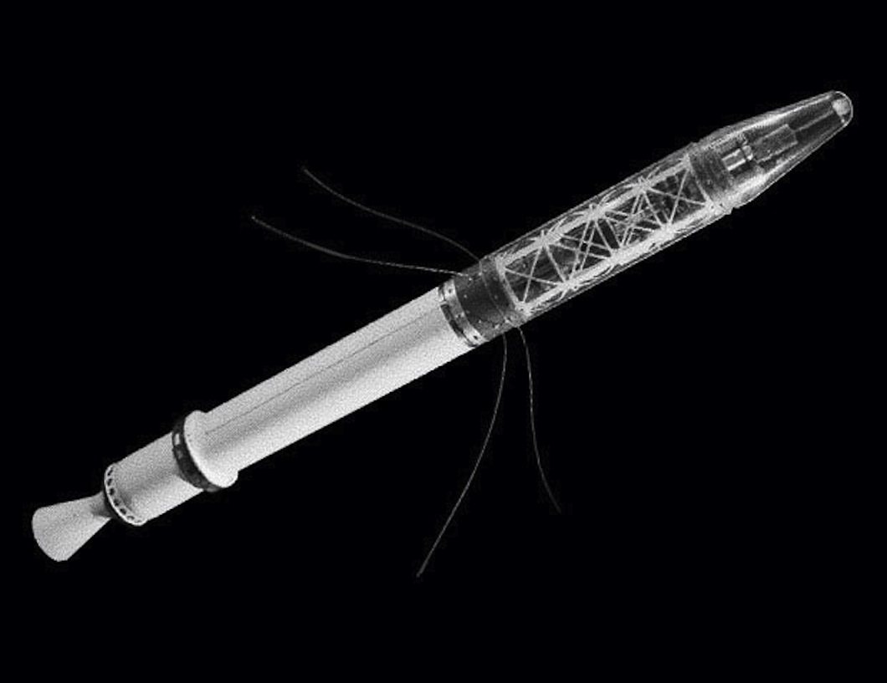

Explorer 1 - The First US Satellite
Explorer 1 was the first satellite launched by the United States on January 31, 1958. It was developed by the Jet Propulsion Laboratory (JPL) and marked the US entry into the Space Race.
The satellite carried a cosmic ray detector, which helped discover the Van Allen Radiation Belts, a major milestone in space science. It operated for nearly four months before ceasing transmission on May 23, 1958.
Specifications:
Launch Date:January 31, 1958
Launch Vehicle:Juno I
Mass:13.37 kg
Orbit:Low Earth Orbit (LEO)
Instruments:Cosmic Ray Detector
Image Gallery